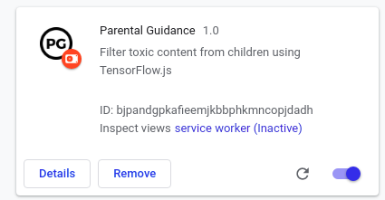
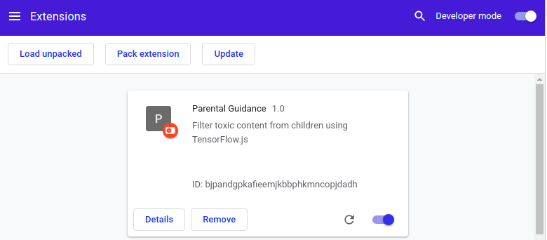
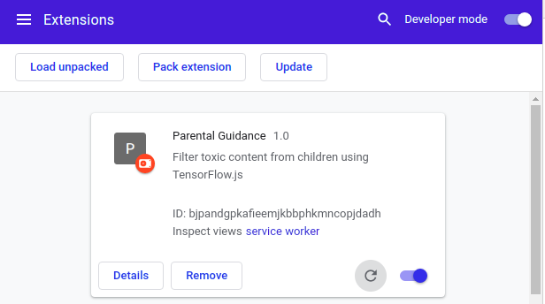
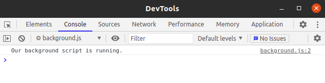
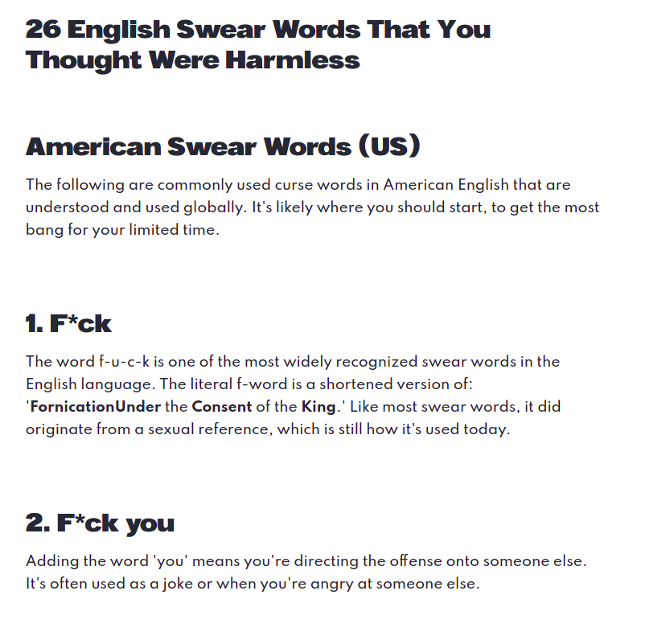
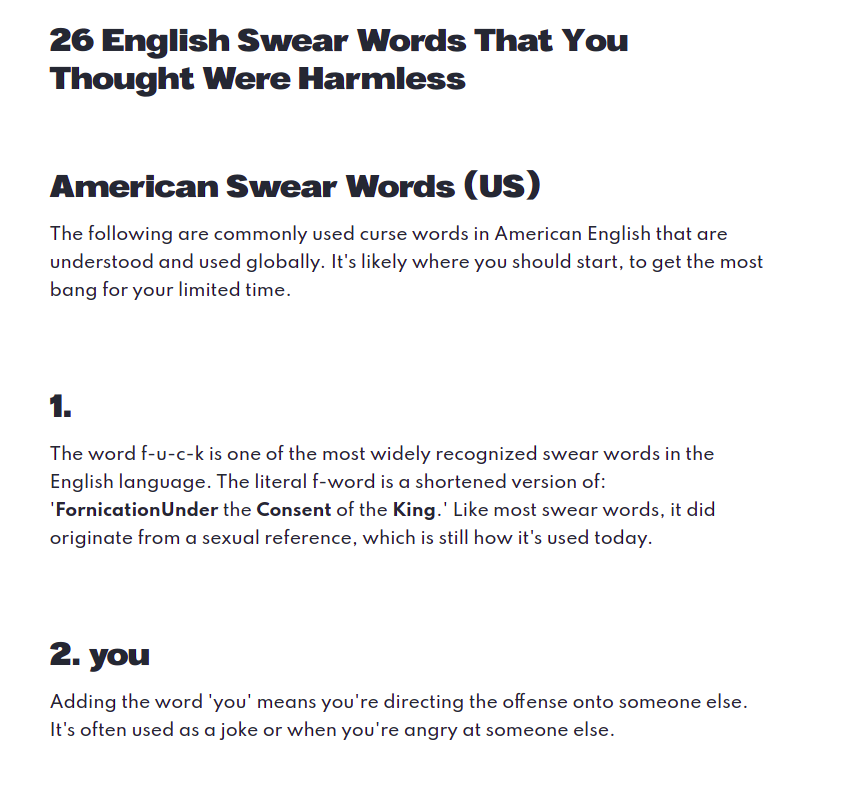
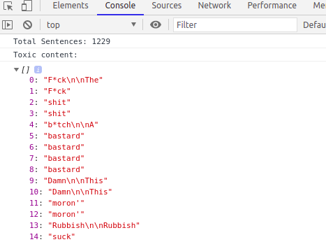

With so much information and content on the internet, it is often difficult to filter out all the toxic material amidst the healthy ones. Most big companies invest millions of $$ trying to build mechanisms that will filter toxic content from their platforms. In this tutorial, we'll build a text filtering chrome extension using TensorFlow.js.
TensorflowJS js is a library for machine learning in Javascript. This means we can run Machine Learning Models right here in our browser. The model we will be using for this codelab is the Toxicity model. The toxicity model detects whether text contains toxic content such as threatening language, insults, obscenities, identity-based hate, or sexually explicit language. The model was trained on the civil comments dataset which contains ~2 million comments labelled for toxicity.
Duration: 28mins
Written by: Muluh MG Godson
In this codelab, you're going to build a weather web app using Progressive Web App techniques. Your app will:
beforeinstallprompt event to notify the user it's installable.
This codelab is focused on TensorFlowJS and Chrome Extensions. Non-relevant concepts and code blocks are glossed over and are provided for you to simply copy and paste.
Let's get started.
Create a new folder that will contain all our files for this extension.
I've uploaded some starter files for use in this tutorial. These files are the TensorFlow.js library and the Toxicity library. Also included are some icons we'll be adding to our extension later on.
You can download these files from my Google Drive by clicking on the button below:
After downloading the assets folder, copy it into the newly created folder you created for this extension.
With this, we are ready to begin building our extension.
In our extensions folder, create a new file called manifest.json and open it up in your text editor of choice.
manifest.json
{
"name": "Parental Guidance",
"description": "Filter toxic content from children using TensorFlow.js",
"author": "Muluh MG Godson",
"version": "1.0",
"manifest_version": 2
}Copy the code above and paste it in your manifest.json file. This file is what lets Chrome know it is an extension and describes the contents of the extension. We will also use the manifest file to request permissions such as permissions to access the currently opened tab etc.
In the code above, we have defined some values, the most important which are:
At this stage, we can already add our extension to Google Chrome. To do this,
chrome://extensions. manifest.json file.If you have done this correctly, you should see your extension listed.

Great Job. The extension is now installed, but it doesn't do anything as of now because we haven't told it what to do yet. Let's add some functionality to it in the next section.
We are going to add a service worker to our extension that will enable it to run in the background of our Chrome browser. We achieve this by adding a background script to our manifest which tells the extension which files to reference and how the file should behave. To do this, we create a new file background.js in our extensions folder and add it to our manifest.json file.
manifest.json
{
"name": "Parental Guidance",
"description": "Filter toxic content from children using TensorFlow.js",
"author": "Muluh MG Godson",
"version": "1.0",
"manifest_version": 2,
"background": {
"service_worker": "background.js"
}
}In our background.js file, add the following code:
background.js
chrome.runtime.onInstalled.addListener(() => {
console.log('Our background script is running.');
});This code just prints to our service worker console. Head over to chrome in the Extensions Management and click the refresh icon to refresh our extension so it can read the changes in our manifest.json file. When you refresh, you will see the service worker detected and running. If you click on it, you will see our text being printed in its console.

In the console of our service worker, you should see the text printed as in the screenshot below.

Create another file called filter.js in our extensions folder. This file will hold all the logic for filtering out the words. We'll add it along with all the other files to our manifest.json file.
manifest.json{
"name": "Parental Guidance",
"description": "Filter toxic content from children using TensorFlow.js",
"author": "Muluh MG Godson",
"version": "1.0",
"manifest_version": 2,
"icons": {
"16": "./assets/icons/16.png",
"48": "./assets/icons/48.png",
"128": "./assets/icons/128.png" },
"background": {
"service_worker": "background.js"
},
"content_scripts": [
{
"matches": [
"<all_urls>"
],
"js": ["assets/tfjs.js", "assets/toxicity.js", "filter.js"]
}
],
"content_security_policy": "script-src 'self' 'unsafe-eval'; object-src 'self'"
}Copy and paste the code above to your manifest.json file.
icons parameter tells the extension where our logos are. content_scripts parameter tells chrome to let this extension run our JS files ( tfjs.js , toxicity.js and filter.js ) on all web pages that are opened using the directive content_security_policy parameter tells Chrome Browser to run these scripts without blocking some of its functions.With this, we can proceed to add our toxic filtering logic to the filter.js file.
In our filter.js file, we are going to begin by grabbing all text on the webpage.
filter.jslet $allText = document.body.innerText;
let $allSentences = $allText.split(" ");
let $deleteWords = []The first line grabs all the text on our the current web page opened.
The second line seperates this chunk of text into individual phrases and stores it as an array. An array is basically a container to hold each of our phrases. The third line initializes an empty array we'll be using later.
The next step is to run each sentence through the Toxicity model using TensorFlow.js. We don't need to import any of these libraries because we already indicated them in our manifest.json file.
filter.jslet $allText = document.body.innerText;
let $allSentences = $allText.split(" ");
let $deleteWords = []
const threshold = 0.9;
toxicity.load(threshold).then(model => {
$allSentences.forEach(sentence => {
model.classify(sentence).then(predictions => {
predictions.forEach(prediction => {
if(prediction.results[0].match){
$deleteWords.push(sentence)
hideWord(sentence);
}
});
})
})
});The threshold is the minimum confidence level for which we determine if a sentence is toxic or not. We then loop through each sentence and pass it through the Toxicity model. If a match occurs for any of the toxic labels, we add the sentence to our $deleteWords array and pass it through the hideWord() function.
filter.jslet $allText = document.body.innerText;
let $allSentences = $allText.split(" ");
let $deleteWords = []
const threshold = 0.9;
toxicity.load(threshold).then(model => {
$allSentences.forEach(sentence => {
model.classify(sentence).then(predictions => {
predictions.forEach(prediction => {
if(prediction.results[0].match){
$deleteWords.push(sentence)
hideWord(sentence);
}
});
})
})
});
function hideWord(sentence) {
let elems = document.querySelectorAll("body *");
let span = "<span style='display: none !important;'>" + sentence + "</span>";
for (let x = 0; x < elems.length; x++) {
elems[x].innerHTML = elems[x].innerHTML.split(sentence).join(span);
}
}The hideWord() function takes the sentence we passed to it and searches through the webpage looking for that sentence. When its found, it wraps a around it. The style of this span is set to display: none which is what hides (filters) the sentence from the webpage. You can try out different things, maybe instead of hiding the text, you can color it red and add a line through it, the possibilities are endless.
Finally, to add a few perks just to see which words the Toxicity model thought are toxic, we are just going to add some few lines to output it to our console tab (Right Click on the webpage and click Inspect) in Chrome Dev Tools.
filter.jslet $allText = document.body.innerText;
let $allSentences = $allText.split(" ");
let $deleteWords = []
const threshold = 0.9;
toxicity.load(threshold).then(model => {
$allSentences.forEach(sentence => {
model.classify(sentence).then(predictions => {
predictions.forEach(prediction => {
if(prediction.results[0].match){
$deleteWords.push(sentence)
hideWord(sentence);
}
});
})
})
});
function hideWord(sentence) {
let elems = document.querySelectorAll("body *");
let span = "<span style='display: none !important;'>" + sentence + "</span>";
for (let x = 0; x < elems.length; x++) {
elems[x].innerHTML = elems[x].innerHTML.split(sentence).join(span);
}
}
console.log("Total Sentences: " + $allSentences.length)
console.log("Toxic content: ")
console.log($deleteWords);This will output the total number of sentences on the wep page opened and then the list of sentences that were classified as toxic.
Now head over to chrome and refresh our extension, then open up any webpage and check the console tab. I use the website English Swear Words for my testing.
The results I got were:
A Screenshot of the Website without Filtering.

A Screenshot after Enabling the Extension

If you check in the console tab you should see the words that are being removed from the webpage.

Congratulations, you've successfully built your first toxic filtering chrome extension.
You added a manifest to enable it to be installed as an extension, and you added a service worker to ensure that your extension is always running in the background.
I will love to see what you make, you can post your screenshots on Twitter and tag me @muluhgodson and use the hashtag #MadeWithTFJS
Our extension currently passes each word on our webpage via the Toxicity model. The idea of how the toxicity model works is in the context of the phrase it is accessing. Passing single words may not have much context. We can change this by changing how we split the text we grab from the webpage. We can do this by changing the second line in our filter.js file.
filter.jslet $allText = document.body.innerText;
let $allSentences = $allText.split(".");
let $deleteWords = []Above, we have indicated that the text be split by full stops. This means we will grab each sentence instead of words. You can experiment with other ways of splitting your text to see which gives you the best results.